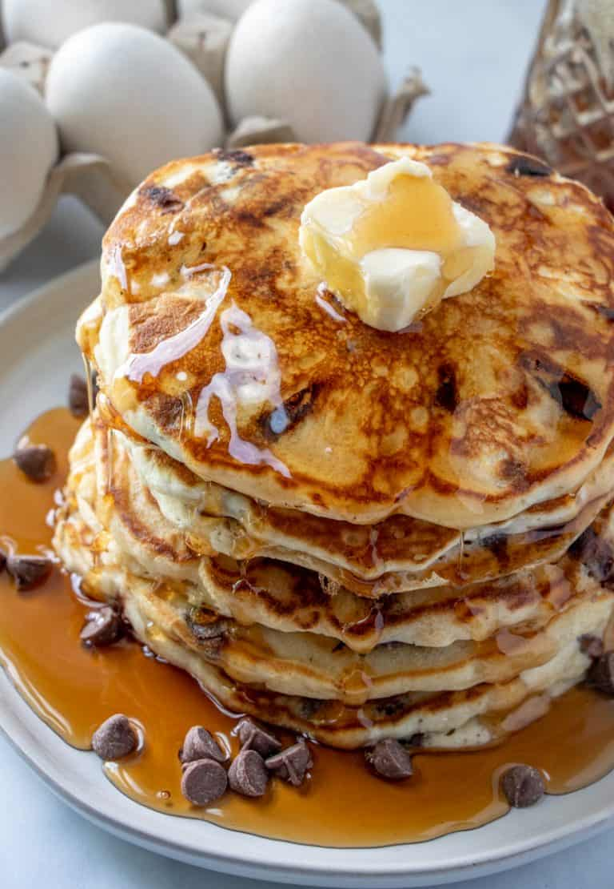
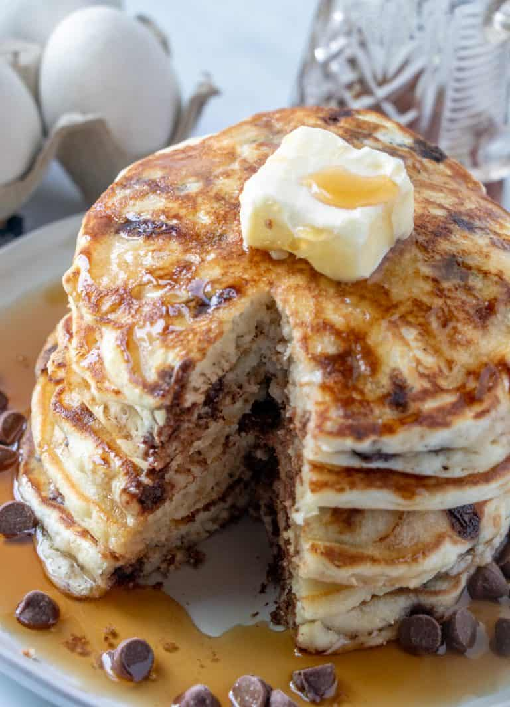

Chocolate Chip Pancakes

Pancakes are a super easy recipe that use basic pantry ingredients that are usually on hand at any given moment. The chocolate chips slightly melt while cooking, so you get gooey melted chocolate in each and every bite, something that really is hard to resist!
INGREDIENTS
- 1-1/2 cup | All-purpose flour
- 4 tsp | Baking powder
- 1/2 tsp | Salt
- 2 tbs | Sugar
- 1-1/4 cup | Milk
- 1 | Beaten egg
- 3 tbs | Melted butter
- 1 tsp | Vanilla
- 1 cup | Chocolate chips
STEPS
- Whisk together flour, baking powder, salt and sugar until combined.
- In another bowl whisk together milk, egg, butter and vanilla.
- Fold or whisk in your wet ingredients into your dry ingredients until just combined.
- Then fold in your chocolate chips, batter may be lumpy and that is ok.
- Let the batter rest for about 5 minutes.
- Heat a non-stick skillet on stove over medium-high heat and spray with non-stick cooking spray.
- Pour or scoop the batter onto the pan in 1/4 cup measurements, gently spread the batter out some then press chocolate chips into the batter.
- Cook on each side for about 3-4 minutes until you see bubbles form and burst on top of batter, and the underside is golden.
- Flip until browned on other side, remove to plate to repeat until all batter is used.
NOTES
- hisk dry ingredients and wet ingredients separately and then mix together until just combined, we do not want to over-mix the batter.
- Letting the batter sit for about 5 minutes gives time for the gluten to rest, resulting in pancakes that aren't chewy and more fluffy.
- You can use any type of chocolate chips you like in this recipe, we prefer milk, but semi-sweet, dark and even mini chocolate chips work wonder.
- We like to spray our pan with non-stick cooking spray rather than melting butter into the pan, I feel that it cooks more even.
- Gently spread the batter out when pouring into pan, the batter isn't super runny so it won't spread as easily, so you need a little encouragement to get it larger.
- We don't have any issues with chocolate chips sinking in the batter, but if you do have issues, just toss it in a little bit of flour before folding into batter.

RETURN HOME